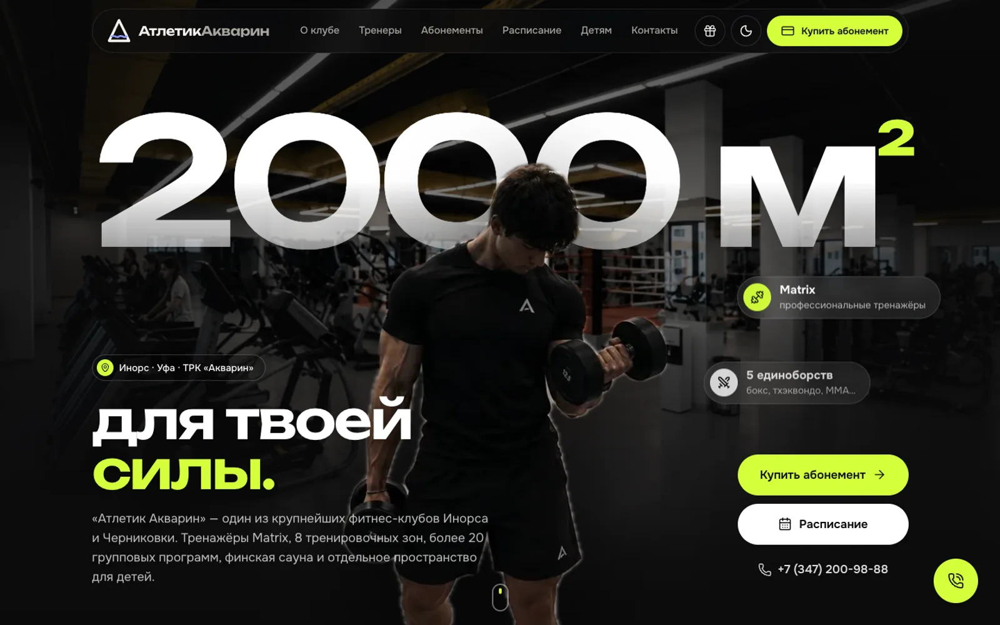

Х.А.Н
Сайт центра оздоровления · Уфа
Задача Помочь посетителю разобраться в услугах и перейти к записи.
Решение Собрал услуги, специалистов и цены в понятную структуру с заметными переходами к контакту.
Тимур · независимый разработчик
Разбираюсь в задаче, собираю понятный сайт и проверяю, удобно ли человеку дойти до заявки.

01 / РАБОТЫ
Один опубликованный сайт и три концепции работ. У каждого примера можно посмотреть, как выглядит страница на компьютере и телефоне.
Сайт центра оздоровления · Уфа
Задача Помочь посетителю разобраться в услугах и перейти к записи.
Решение Собрал услуги, специалистов и цены в понятную структуру с заметными переходами к контакту.

Фитнес-клуб
Задача Показать атмосферу клуба и помочь выбрать тренировку.
Решение Собрал понятный путь от направлений и расписания к тренерам и абонементам.
Барбершоп
Задача Передать характер студии и сократить путь до записи.
Решение Показал услуги, цены и мастеров, выделил следующий шаг для посетителя.

Автосервис
Задача Объяснить состав обслуживания до визита в сервис.
Решение Продумал структуру услуг, подачу стоимости и путь к заявке.
02 / НАПРАВЛЕНИЯ
Начинаем с задачи: кому нужен продукт, что человек должен сделать и какие данные нужны для этого шага.
В портфолио выше — сайт и концепции сайтов. Задачу для бота или приложения обсудим отдельно: сначала определим объём и технические требования.
 ТИМУР / УФА
ТИМУР / УФА03 / КТО ДЕЛАЕТ
Мне 16, я из Уфы. Делаю сайты, пробую разные форматы интерфейсов и развиваю навык продаж.
Учусь на логиста: мне интересно, как устроен процесс целиком — от первого вопроса клиента до результата. В работе сначала разбираю задачу, затем собираю решение и проверяю его на телефоне.
Я в начале пути. Поэтому показываю реальные работы отдельно от концепций и не выдаю идеи за чужие заказы.
Поговорить о проекте04 / КАК РАБОТАЮ
Коротко объясняете задачу, аудиторию и желаемый результат. Я уточняю то, что влияет на проект.
Показываю структуру, основные экраны и следующий шаг. Согласуем объём работы до разработки.
Делаю рабочую версию, показываю её вам и вношу согласованные правки.
Проверяю телефон, кнопки, ссылки и понятность пути до заявки. После этого готовим публикацию.
05 / НАЧНЁМ С РАЗГОВОРА
Напишите, что хотите сделать и для кого. Я уточню детали и предложу следующий шаг.
Написать в Telegram